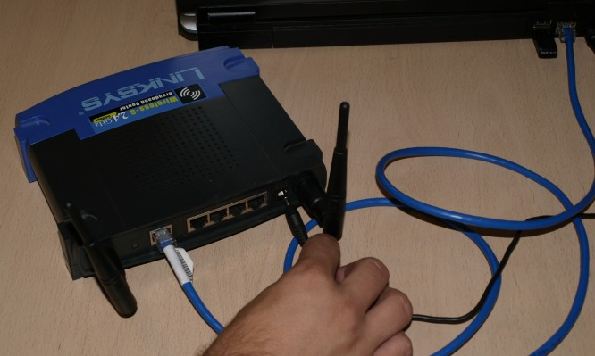
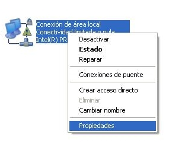
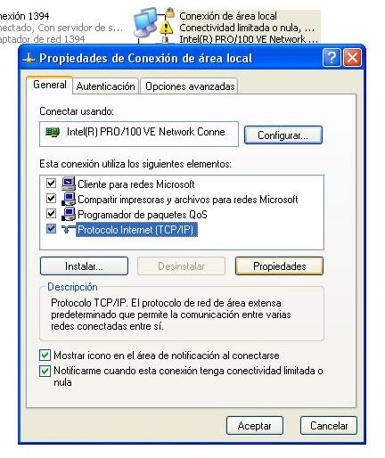
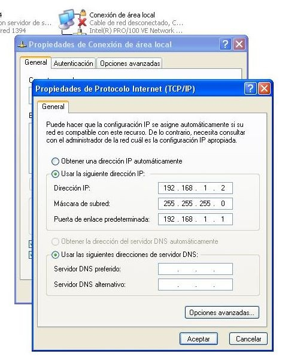
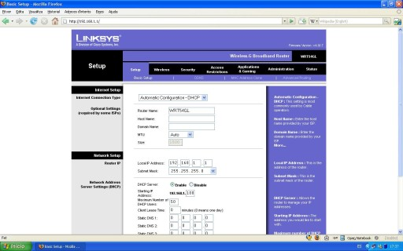
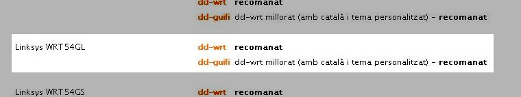
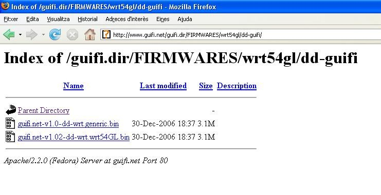

Procediments per al Linksys WRT-54GL
Connectem el router amb el transformador i l'endollem. Agafem el cable de xarxa
i el connectem, un extrem a l'ordinador i l'altre a un dels ports que té el
router (en aquest cas el primer).

Ara hem de configurar l'interfície de xarxa del nostre ordinador per tal de
poder comunicar-nos amb el router. Per això anem a l'apartat conexiones de
red del windows.
Veurem varies icones, però només ens interessa la Conexión de area
local. Cliquem amb el botó dret del ratolí sobre de l'icona i
seleccionem Propiedades.

Dins de les Propiedades de Conexión de area local, seleccionem Protocolo Internet (TCP/IP) i cliquem Propiedades un
altre cop.

Aquí seleccionarem Usar la siguiente dirección IP i escriurem els
següents camps:
- Dirección IP: 192.168.1.2
- Mascara de subred: 255.255.255.0
- Puerta de enlace: 192.168.1.1

Després cliquem aceptar i finalment cerrar. En
aquest punt, si teniu Windows XP, hauríeu d'observar un núvol informatiu a la
part inferior dreta, informant-vos de que s'ha establert una connexió de xarxa.
Ara, si obrim el navegador web i entrem l'adreça 192.168.1.1, ens apareixerà la
pantalla inicial de configuració del router.

Aquests routers disposen d'un apartat per actualitzar el firmware a través del
web. A diferència del Buffalo, aquest no estan encriptats i per tant podem fer
servir aquesta utilitat per modificar el firmware.
Abans però, necessitem descarregar el firmware que volem posar al nostre router.
Si anem a la pàgina www.guifi.net/firmware ens donarà unes recomanacions depenent del router que tinguem.
En aquest cas (WRT-54GL) ens recomanen el DD-guifi o el DD-WRT. Triarem el
DD-guifi i clicarem a l'enllaç. Ara ens apareixerà la pàgina amb els firmwares.

Clicarem a la versió més nova (guifi.net-v1.02-dd-wrt.wrt54GL.bin) i el
guardarem al disc.
